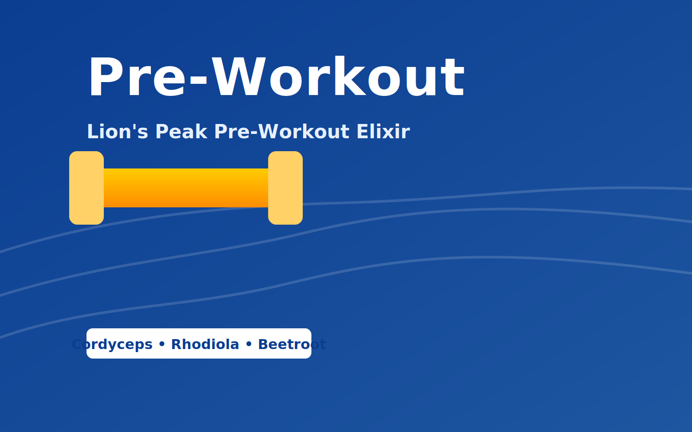

Lion's Peak Pre-Workout Elixir
From ฿890 • 20 servings
Clean, steady performance: adaptogens, nitrates, and nootropics to support ATP and focus without jitters.
- Organic Cordyceps 1,000 mg
- Rhodiola (3% rosavins) 300 mg
- Green Tea (50% EGCG) 150 mg + L-Theanine 200 mg
- Beetroot 2,000 mg • Coconut Water 1,000 mg